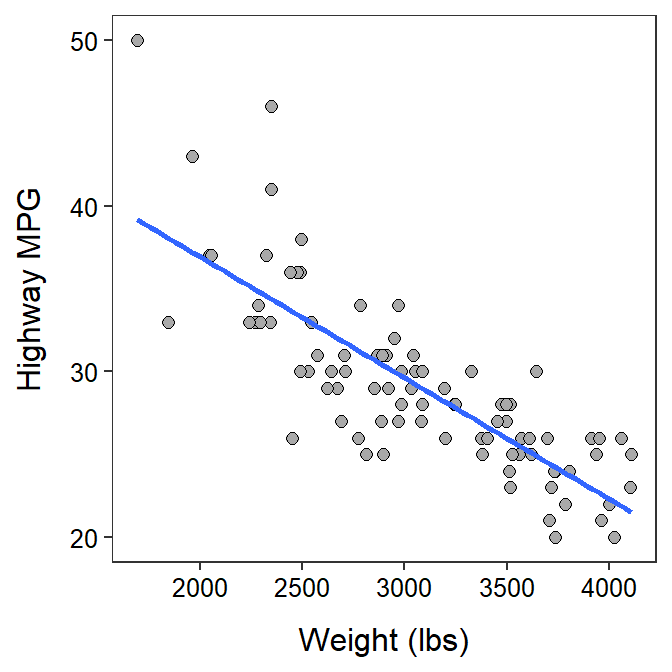

Module 26 Linear Regression in R
In the Module 9 you learned about the theory underlying linear regression and answered application questions related to the results of a linear regression. In this module, you will learn how to perform a linear regression, visualize the results, and make predictions from a linear regression using R.106 You will also be asked to answer the same series of questions you answered in Module 9.
Data Sets
The descriptions below will use the same weight (lbs) and highway miles per gallon (HMPG) data for 93 cars from the 1993 model year that were used in the second example in the Modules 9. These data are in 93cars.csv (data, meta) and are loaded into R below with the methods described in Section 22.2.2.107
cars93 <- read.csv("93cars.csv")
headtail(cars93,which=c("MFG","Model","Type","Weight","HMPG"))#R> MFG Model Type Weight HMPG
#R> 1 Acura Integra Small 2705 31
#R> 2 Acura Legend Midsize 3560 25
#R> 3 Audi 90 Compact 3375 26
#R> 91 Volkswagen Corrado Sporty 2810 25
#R> 92 Volvo 240 Compact 2985 28
#R> 93 Volvo 850 Midsize 3245 28
26.1 Fitted Line Plot
The linear fitted line can be added to a scatterplot (see Section 25.1.1) with geom_smooth(). The geom_smooth() function requires method="lm" to show the linear regression line and se=FALSE to remove the underlying confidence band.108
ggplot(data=cars93,mapping=aes(x=Weight,y=HMPG)) +
geom_point(pch=21,color="black",fill="darkgray",size=2) +
labs(x="Weight (lbs)",y="Highway MPG") +
theme_NCStats() +
geom_smooth(method="lm",se=FALSE)
26.2 Fitting the Regression Model in R
The linear regression model is fit to two quantitative variables with lm(). The first argument is a formula of the form response~explanatory, where response contains the quantitative response variable and explanatory contains the quantitative explanatory variable. The corresponding data frame is given in data=. The results of lm() may be assigned to an object so that specific results can be extracted.
( lm1 <- lm(HMPG~Weight,data=cars93) )#R> Coefficients:
#R> (Intercept) Weight
#R> 51.601365 -0.007327The regression results above show that the intercept is 51.6 and the slope is -0.0073.
The slope is under the name of the explanatory variable and the intercept is under “(Intercept)” in the lm() results.
26.3 Coefficient of Determination
The coefficient of determination is computed by submitting the saved lm() object to rSquared(). For example, 65.7% of the variability in highway MPG for a car is explained by knowing its weight. [Note the use of digits= to control the number of decimals.]
rSquared(lm1,digits=3)#R> [1] 0.65726.4 Predicted Values
Predicted values from the linear regression are obtained with predict(), which requires the saved lm() object as its first argument. The second argument is a data frame constructed with data.frame() that contains the EXACT name of the explanatory variable as it appeared in lm() set equal to the value of the explanatory variable at which the prediction should be made. For example, the predicted highway MPG for a car that weights 2500 lbs is 33.3, as obtained below.
predict(lm1,data.frame(Weight=2500))#R> 1
#R> 33.28372
Methods in this module require the
NCStatspackage (as always) and theggplot2package (for making graphs). Both packages are loaded in the first code chunk of the assignment template.↩︎The
which=argument inheadtail()is used to show only a few variables ofcars93, just to save space.↩︎This is an advanced topic for a future course.↩︎